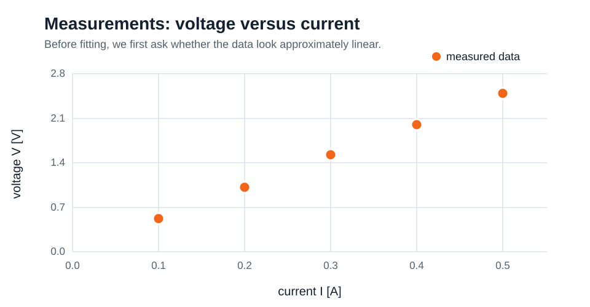
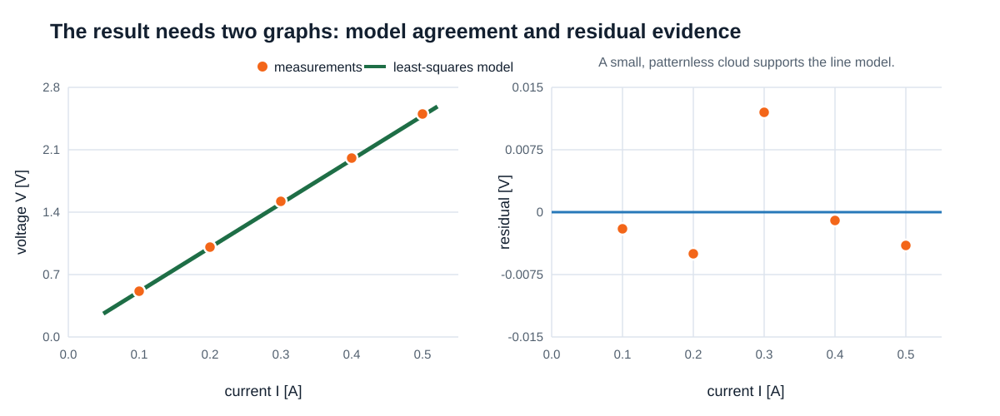

Calculator expressions → variables → output and errors → one complete, scaffolded data analysis.
println1 + 1
println(1 + 1)2The Julia extension evaluates an expression and displays its value. println deliberately writes text to the REPL/terminal, so we use it when a message or labelled result helps a reader.
println(exp(1))
println(sin(pi / 2))
println(mod(17, 5))
println(div(17, 5))2.718281828459045
1.0
2
3exp, sin, mod, and div are function calls. Here 17 = 3*5 + 2, so the quotient is 3 and the remainder is 2.
println(2pi)
println((2 + 3) * 4)
println(2^3)6.283185307179586
20
8In 2pi Julia reads the numeric coefficient as multiplication by pi. Type \pi then Tab for π; Julia accepts both π and pi.
x = 2
y = 3
println(x + y)
println(x^2 + y^2)5
13= assigns the current result; it is not a permanent algebraic identity. We keep identifiers unit-free and record each unit in a short trailing comment, for example voltage = 2.0 # V.
With positive current and voltage, V = RI. The slope of voltage (V) versus current (A) has units V/A = Ω: resistance.
An ohmic, approximately fixed-state, weak-field conductor is assumed. At I=0, ideal V=0. Heating, contacts, and non-ohmic devices can invalidate the line.
| I (A) | 0.10 | 0.20 | 0.30 | 0.40 | 0.50 |
|---|---|---|---|---|---|
| V (V) | 0.52 | 1.01 | 1.52 | 2.00 | 2.49 |
Predict: increasing and nearly straight. We supply the vector and fit recipe line by line this week; vector and fitting mastery comes later.
using CSV, DataFrames, PlotsStep 1: the program states which installed tools it needs.
data = CSV.read("ohm_law.csv", DataFrame)
println(first(data, 5))Step 2: open the file and inspect its first five rows.
current = data.current_A # A
voltage = data.voltage_V # VStep 3: extract the two columns into unit-free names whose unit lives in a trailing comment.
scatter(current, voltage,
xlabel="current I [A]", ylabel="voltage V [V]",
label="measurements", markerstrokewidth=0)Step 4: plot the measurements before fitting anything.
values = [1, 2, 3]
squared = values .^ 2 # [1, 4, 9]Step 5: a dot on an operator tells Julia to apply it element by element.
n = length(current)
I_bar = sum(current) / n # A
V_bar = sum(voltage) / n # V
dI = current .- I_bar # A
dV = voltage .- V_bar # V
resistance = sum(dI .* dV) / sum(dI .^ 2) # ohm
offset = V_bar - resistance * I_bar # Vresistance = 4.93 ohm
offset = 0.029 VThese are the direct linear-fit formulas with every quantity left visible. length counts the measurements, sum adds a vector, and the dotted operators act element by element.

Markers: observations. Line: model prediction.

residual = measured − predicted; a systematic pattern would question the model.
predicted = [0.522, 1.015, 1.508, 2.001, 2.494]
residuals = [-0.002, -0.005, 0.012, -0.001, -0.004] # Vplot()
plot!([0, 1], [1, 0])
savefig("example.png")
rounded = round(1.2345, digits=2)
println("value = $(rounded)")value = 1.23A tiny example of plot!, savefig, and string interpolation.
scatter(current, voltage,
xlabel="current I [A]", ylabel="voltage V [V]",
label="measurements", markerstrokewidth=0)
plot!(current, resistance .* current .+ offset,
label="least-squares model", linewidth=2)
savefig("ohm_law_fit.png")
println("R = $(round(resistance, digits=3)) ohm")
println("offset = $(round(offset, digits=3)) V")R = 4.93 ohm
offset = 0.029 VThe full reporting block re-creates the measurement scatter and adds the fitted model.
residual = voltage .- (resistance .* current .+ offset) # V
scatter(current, residual,
xlabel="current I [A]", ylabel="residual V - model [V]",
label="residuals", markerstrokewidth=0)
hline!([0], label="zero residual")
savefig("ohm_law_residuals.png")Plot the residuals to check whether they fluctuate around zero without an obvious pattern.
voltage = is incomplete; Julia cannot parse it.
voltagee names a value that was never defined.
I/V runs, but A/V is conductance—not resistance. Units and known cases help.
Use the supplied recipe on spring force versus extension. The slope is a spring constant in N/m.
Fit free-fall distance as y=a*t^2+b, report g=2a, and inspect the observation/model and residual figures.
Style an honest Ohm-law figure; optionally explore Lissajous curves with the supplied plotting recipe.
Runnable lecture notebook · Next chapter: values, Boolean conditions, and a block on an incline.
Minimize S(R,b) = Σ[Vᵢ − (RIᵢ+b)]². Setting the derivative with respect to b to zero gives b = V̄ − RĪ: the line passes through the mean point.
Setting the derivative with respect to R to zero and substituting b gives Σ(Iᵢ−Ī)(Vᵢ−V̄) = R Σ(Iᵢ−Ī)². Divide to obtain the slope formula.
If all currents are equal, no unique slope is determined. The full derivation is restored in Chapter 1. This is optional background, separate from the one-third-point figure bonus.